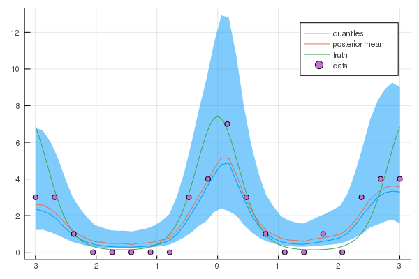

Poisson Regression example
Gaussian process models can be incredibly flexbile for modelling non-Gaussian data. One such example is in the case of count data $\mathbf{y}$, which can be modelled with a Poisson model with a latent Gaussian process.
where $\lambda_i=\exp(f_i)$ and $f_i$ is the latent Gaussian process.
#Load the package
using GaussianProcesses, Random, Distributions
#Simulate the data
Random.seed!(203617)
n = 20
X = collect(range(-3,stop=3,length=n));
f = 2*cos.(2*X);
Y = [rand(Poisson(exp.(f[i]))) for i in 1:n];
#Plot the data using the Plots.jl package with the GR backend
using Plots
gr()
scatter(X,Y,leg=false, fmt=:png)
#GP set-up
k = Matern(3/2,0.0,0.0) # Matern 3/2 kernel
l = PoisLik() # Poisson likelihood
gpmc = GP(X, vec(Y), MeanZero(), k, l)
gpvi = GP(X, vec(Y), MeanZero(), k, l)GP Approximate object:
Dim = 1
Number of observations = 20
Mean function:
Type: MeanZero, Params: Float64[]
Kernel:
Type: Mat32Iso{Float64}, Params: [0.0, 0.0]
Likelihood:
Type: PoisLik, Params: Any[]
Input observations =
[-3.0 -2.68421 … 2.68421 3.0]
Output observations = [3, 3, 1, 0, 0, 0, 0, 0, 3, 4, 7, 3, 1, 0, 0, 1, 0, 3, 4, 4]
Log-posterior = -65.397set_priors!(gpmc.kernel,[Normal(-2.0,4.0),Normal(-2.0,4.0)])
@time samples = mcmc(gpmc; nIter=10000);Number of iterations = 10000, Thinning = 1, Burn-in = 1
Step size = 0.100000, Average number of leapfrog steps = 10.029000
Number of function calls: 100291
Acceptance rate: 0.801400
4.052686 seconds (24.20 M allocations: 2.026 GiB, 8.23% gc time)#Sample predicted values
xtest = range(minimum(gpmc.x),stop=maximum(gpmc.x),length=50);
ymean = [];
fsamples = Array{Float64}(undef,size(samples,2), length(xtest));
for i in 1:size(samples,2)
set_params!(gpmc,samples[:,i])
update_target!(gpmc)
push!(ymean, predict_y(gpmc,xtest)[1])
fsamples[i,:] = rand(gpmc, xtest)
end
#Predictive plots
q10 = [quantile(fsamples[:,i], 0.1) for i in 1:length(xtest)]
q50 = [quantile(fsamples[:,i], 0.5) for i in 1:length(xtest)]
q90 = [quantile(fsamples[:,i], 0.9) for i in 1:length(xtest)]
plot(xtest,exp.(q50),ribbon=(exp.(q10), exp.(q90)),leg=true, fmt=:png, label="quantiles")
plot!(xtest,mean(ymean), label="posterior mean")
xx = range(-3,stop=3,length=1000);
f_xx = 2*cos.(2*xx);
plot!(xx, exp.(f_xx), label="truth")
scatter!(X,Y, label="data")
Alternatives to MCMC
As an alternative to MCMC, the practioner is also able to compute the approximate posterior using variational inference. This is done through the approach described in Khan et. al.. An approximate density $q(\mathbf{x})=(2 \pi)^{-N / 2}|\mathbf{\Sigma}|^{-\frac{1}{2}} e^{-\frac{1}{2}(\mathbf{x}-\boldsymbol{\mu})^{\top} \boldsymbol{\Sigma}^{-1}(\mathbf{x}-\boldsymbol{\mu})}$ is used to replace the true posterior.
Syntactically, this can be found in a similar vein to mcmc by simply using the following statements.
@time Q = vi(gpvi);Number of iterations = 1, Thinning = 1, Burn-in = 1
Step size = 0.100000, Average number of leapfrog steps = 7.000000
Number of function calls: 8
Acceptance rate: 0.000000
1.517399 seconds (1.09 M allocations: 471.231 MiB, 6.14% gc time)nsamps = 500
ymean = [];
visamples = Array{Float64}(undef, nsamps, size(xtest, 1))
for i in 1:nsamps
visamples[i, :] = rand(gpvi, xtest, Q)
push!(ymean, predict_y(gpvi, xtest)[1])
end
q10 = [quantile(visamples[:, i], 0.1) for i in 1:length(xtest)]
q50 = [quantile(visamples[:, i], 0.5) for i in 1:length(xtest)]
q90 = [quantile(visamples[:, i], 0.9) for i in 1:length(xtest)]
plot(xtest, exp.(q50), ribbon=(exp.(q10), exp.(q90)), leg=true, fmt=:png, label="quantiles")
plot!(xtest, mean(ymean), label="posterior mean", w=2)
xx = range(-3,stop=3,length=1000);
f_xx = 2*cos.(2*xx);
plot!(xx, exp.(f_xx), label="truth")
scatter!(X,Y, label="data")